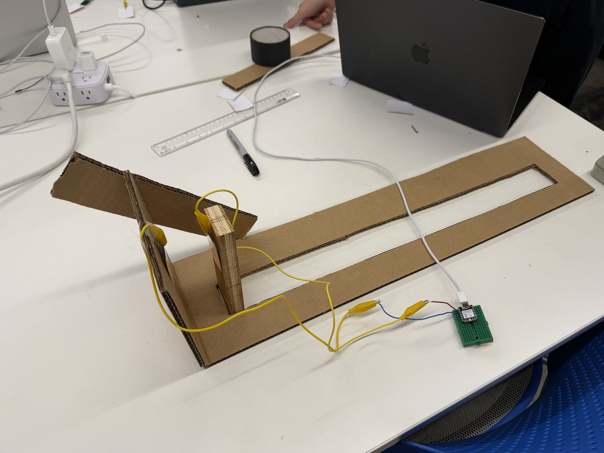
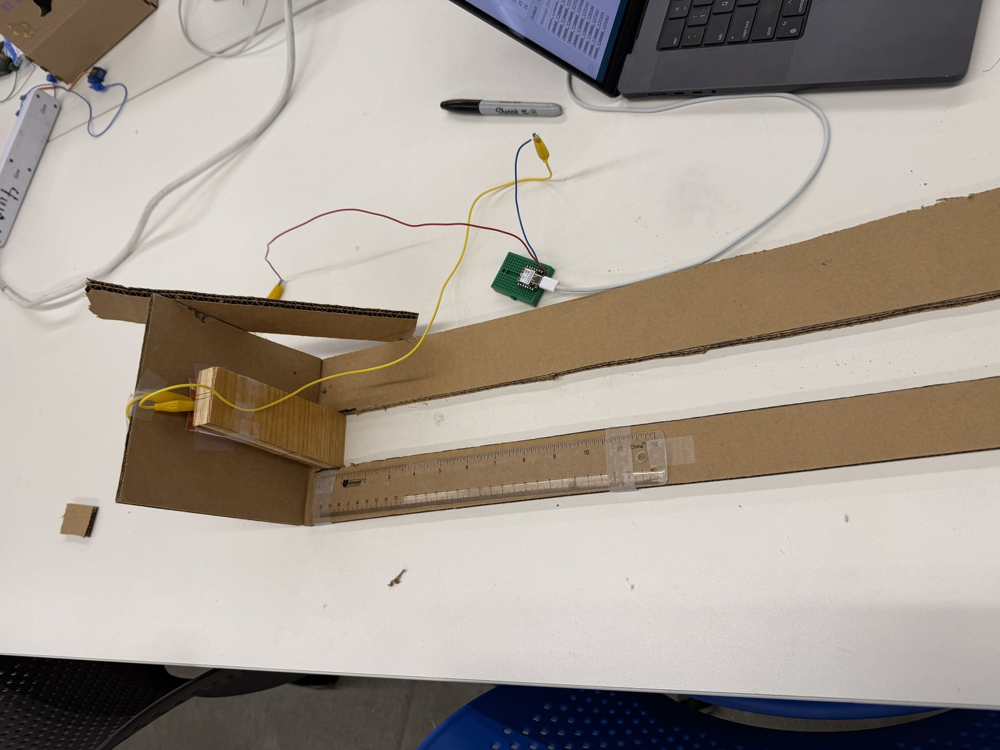
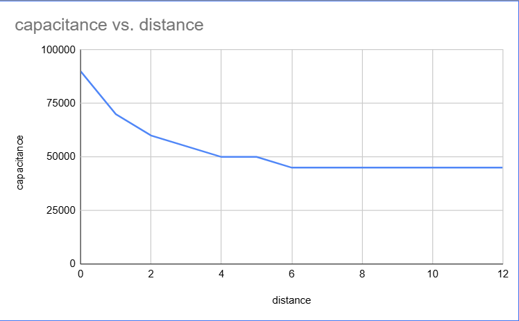
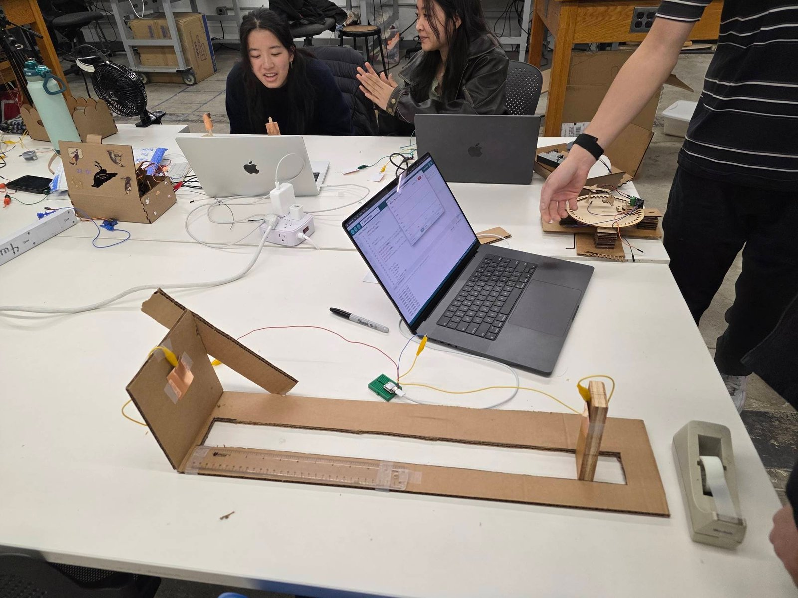

<div class="textcontainer">
<br></br>
<h3>Week 6: Electronic Inputs</h3>
<p class = "margin"></p>
The assignment had two parts: build and characterize a capacitive distance sensor, and then use a second, different sensor. The first one I built in class as a team with Matthew, Alice, and Aurora — a tin-foil capacitive rig that measures how close a wooden block is to a pair of electrodes. The second is mine alone: I'm counting the RSSI signal off the ESP-NOW antennas on my final-project robots — same idea (input → distance), totally different physical effect.
<p class = "margin"></p>
My teammates wrote up the same Assignment 1 build from their own angles — worth a look:
<ul>
<li><a href="https://matthewchang0.github.io/PS70/06_inputs/index.html">Matthew's Week 6</a></li>
<li><a href="https://dragoncat5482.github.io/PS70-assignments/06_inputs">Alice's Week 6</a></li>
</ul>
<p class = "margin"></p>
<h4>Assignment 1: Capacitive Distance Sensor</h4>
<p class = "margin"></p>
<h5>The setup</h5>
<p class = "margin"></p>
Two pieces of tin foil are the electrodes. One (TX) is taped to a vertical cardboard flap at one end of a cardboard rail. The other (RX) is taped to a wooden block that slides along the rail. A ruler is glued along the rail so we can read distance directly.
<p class = "margin"></p>
Both electrodes wire back to a XIAO ESP32-C3 with alligator clips:
<ul>
<li>TX foil → D1 (digital output, the pin we step high and low)</li>
<li>RX foil → D0 (analog input, the pin we read)</li>
<li>The XIAO sits on a small breakout board with screw terminals so the alligator clips can grab onto something solid</li>
</ul>
<p class = "margin"></p>
<p></p>
<p class="caption">Side view of the rig — XIAO on the breakout board, alligator clips running to the TX and RX foil patches.</p>
<p class = "margin"></p>
<p></p>
<p class="caption">Top-down view with the ruler in frame — block slides along the rail to known distances during calibration.</p>
<p class = "margin"></p>
<h5>How the measurement works</h5>
<p class = "margin"></p>
The two foil electrodes form a tiny parallel-plate-ish capacitor with the air gap between them as the dielectric. When the wooden block (with the RX foil on it) is close to the TX foil, more of the TX's electric field couples into the RX foil, and that shows up as a bigger voltage swing on the RX side.
<p class = "margin"></p>
We're not measuring capacitance in farads — we're measuring how strongly a step on TX shows up on RX, which is a proxy for the same thing. The algorithm in the loop is:
<ol>
<li>Drive TX high.</li>
<li>Read RX with <code>analogRead</code> → <code>read_high</code>.</li>
<li>Wait 100 µs for the line to settle.</li>
<li>Drive TX low.</li>
<li>Read RX again → <code>read_low</code>.</li>
<li>Take the difference. That's your one-sample coupling strength.</li>
<li>Repeat 100 times and sum.</li>
</ol>
<p class = "margin"></p>
Summing 100 samples knocks down random noise by ~10× (square-root-of-N averaging), so the numbers you'd otherwise see jittering around become solid enough to read off a ruler position by.
<p class = "margin"></p>
<h5>Code</h5>
<p class = "margin"></p>
<a href="capacitance.ino" download>capacitance.ino</a>
<p class = "margin"></p>
```cpp
long result; //variable for the result of the tx_rx measurement.
int analog_pin = D0;
int tx_pin = D1;
void setup() {
pinMode(tx_pin, OUTPUT); //Pin 4 provides the voltage step
Serial.begin(9600);
}
void loop() {
result = tx_rx();
Serial.println(result);
}
long tx_rx(){ // Function to execute rx_tx algorithm and return a value
// that depends on coupling of two electrodes.
// Value returned is a long integer.
int read_high;
int read_low;
int diff;
long int sum;
int N_samples = 100; // Number of samples to take. Larger number slows it down, but reduces scatter.
sum = 0;
for (int i = 0; i < N_samples; i++){
digitalWrite(tx_pin,HIGH); // Step the voltage high on conductor 1.
read_high = analogRead(analog_pin); // Measure response of conductor 2.
delayMicroseconds(100); // Delay to reach steady state.
digitalWrite(tx_pin,LOW); // Step the voltage to zero on conductor 1.
read_low = analogRead(analog_pin); // Measure response of conductor 2.
diff = read_high - read_low; // desired answer is the difference between high and low.
sum += diff; // Sums up N_samples of these measurements.
}
return sum;
}
```
<p class = "margin"></p>
<h5>Calibration</h5>
<p class = "margin"></p>
To turn this into a real sensor we needed to find out what reading corresponds to what distance. So we parked the wooden block at known distances on the ruler, watched the serial monitor, and wrote down the number.
<p class = "margin"></p>
<iframe width="560" height="315" src="https://www.youtube.com/embed/DT4aYuXwBIQ" title="Capacitive distance sensor calibration" frameborder="0" allow="accelerometer; autoplay; clipboard-write; encrypted-media; gyroscope; picture-in-picture; web-share" allowfullscreen></iframe>
<p class = "margin"></p>
The data:
<table>
<tr><th>distance (cm)</th><th>summed reading</th></tr>
<tr><td>0</td><td>90000</td></tr>
<tr><td>1</td><td>70000</td></tr>
<tr><td>2</td><td>60000</td></tr>
<tr><td>3</td><td>55000</td></tr>
<tr><td>4</td><td>50000</td></tr>
<tr><td>5</td><td>50000</td></tr>
<tr><td>6</td><td>45000</td></tr>
<tr><td>12</td><td>45000</td></tr>
</table>
<p class = "margin"></p>
<p></p>
<p class="caption">Summed reading vs distance — roughly 1/d falloff until it hits the ~45 000 noise floor at 6 cm.</p>
<p class = "margin"></p>
The shape is roughly 1/distance falling off until it bottoms out at ~45000 by 6 cm — that's the noise floor, the residual coupling you'd get even with the RX foil basically in another room. Useful sensing range is 0–5 cm; past that the sensor can't tell you anything meaningful.
<p class = "margin"></p>
The setup, mid-calibration with the wooden block on the rail:
<p class = "margin"></p>
<p></p>
<p class="caption">Mid-calibration — block on the rail, serial monitor streaming readings on the laptop.</p>
<p class = "margin"></p>
<h4>Assignment 2: RSSI as a Distance Sensor</h4>
<p class = "margin"></p>
For the second sensor I'm counting the antennas on my final-project robots. Each XIAO ESP32-C3 has an onboard PCB antenna, and every ESP-NOW packet that arrives comes stamped with an <b>RSSI</b> value — the radio's measurement of how strong that packet was, in dBm. Stronger signal means the broadcasting robot is close; weaker signal means it's far. That's a distance sensor, just one that runs on radio waves instead of capacitive coupling between foil plates.
<p class = "margin"></p>
Calibration is the same exercise as above, just with different numbers: park the receiving robot at known distances from the sender, watch the serial monitor, write down what RSSI you see. The curve has the same shape — high value when close, falls off with distance, bottoms out at a noise floor — except it's logarithmic (dBm) and noisier (multipath, antenna orientation, anyone walking past). On my robots the readings work out to roughly:
<ul>
<li>~−28 dBm when the boards are touching</li>
<li>~−50 dBm at about 2.5 m</li>
</ul>
<p class = "margin"></p>
The receiver code uses two calibrated thresholds — chase if RSSI drops below −45 dBm, stop if it climbs back above −35 dBm — and those numbers came from this same "park it at known distances and read off the value" process. The full sketch, wiring, and the smoothing/hysteresis logic that consume those readings live on the <a href="../04_microcontroller/index.html">Week 4 page</a>.
<p class = "margin"></p>
<div class="week-nav">
<a href="../05_3Ddesign/index.html" class="week-nav-prev">
<span class="week-nav-label">← Previous</span>
<span class="week-nav-title">Week 5 — 3D Design</span>
</a>
<a href="../07_outputs/index.html" class="week-nav-next">
<span class="week-nav-label">Next →</span>
<span class="week-nav-title">Week 7 — Outputs</span>
</a>
</div>
</div>